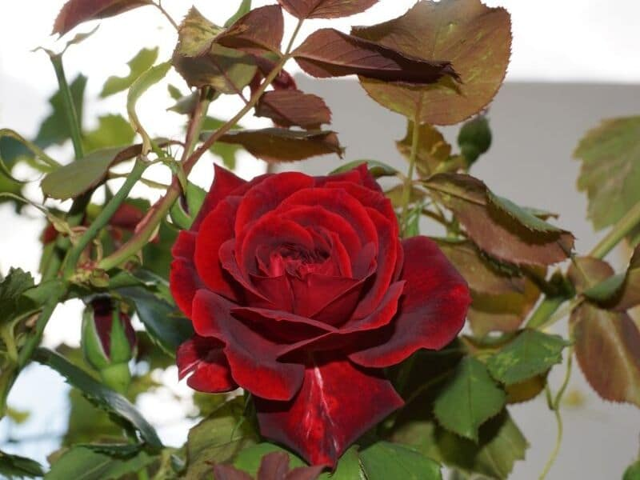
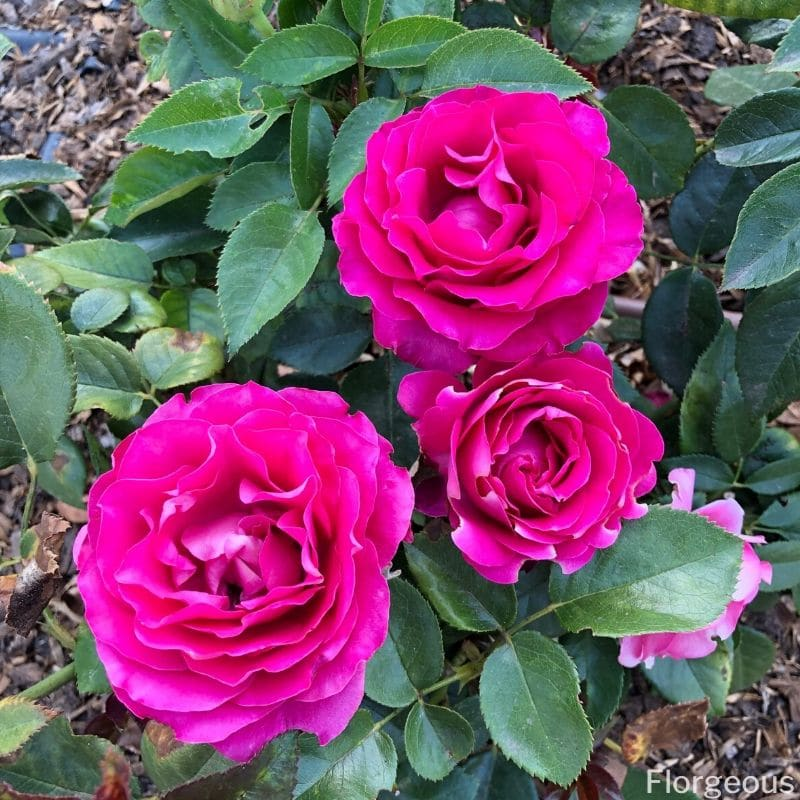
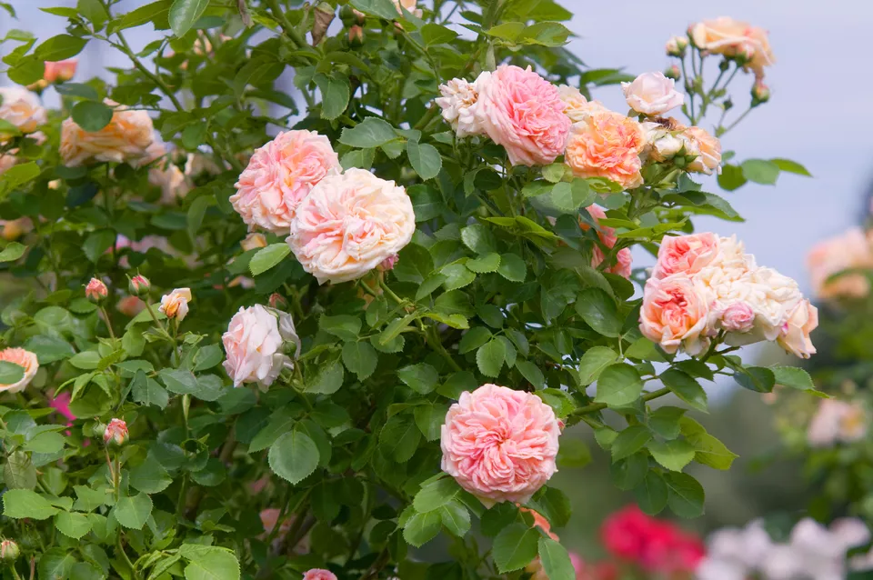

|:|ROSE ,the beautiful flower|:|
”WHAT'S IN A NAME? THAT WHICH WE CALL A ROSE BY ANY OTHER NAME WOULD SMELL AS SWEET” (QUOTE FROM ROMEO AND JULIET BY WILLIAM SHAKESPEARE, CA. 1600)

In various countries all over the world, rose is the most popular and important ornamental plant in the landscape and cut flower industries as well as in perfumery and medicine.
The Rose family houses over a hundred species of the genus Rosa, the woody perennial flowering plants known for their colorful,fragrant blooms of great architectural dimensions.
The distinct characteristics of the rose plant include symmetrical round flower head with soft and fragrant petals, oval serrated leaves and hard thorny stems.
With their striking appearance, roses have become a favorite of both hobbyists and breeders and more varieties of superior qualities have been developed.
In fact, numerous organizations dedicated to the enhancement and promotion of rose plants are spread around the world, the Royal National Rose Society in England established in 1876 being the oldest.
“THE Queen Of Flowers' is the one and only 'Rose' in our Heart”
Roses are literally the queen of flowers.
We should develop the ability to survive and become strong just like the rose grows thorns to protect itself from harm.
As you work towards your goals and dreams, you should enjoy your journey as much as the destination, seeing as to how the rose is beautiful at each stage of its life cycle.
Roses require pruning to allow them to thrive.Similarly, we must embrace the seasons of “pruning” in our lives to encourage new growth and help us move forward..

